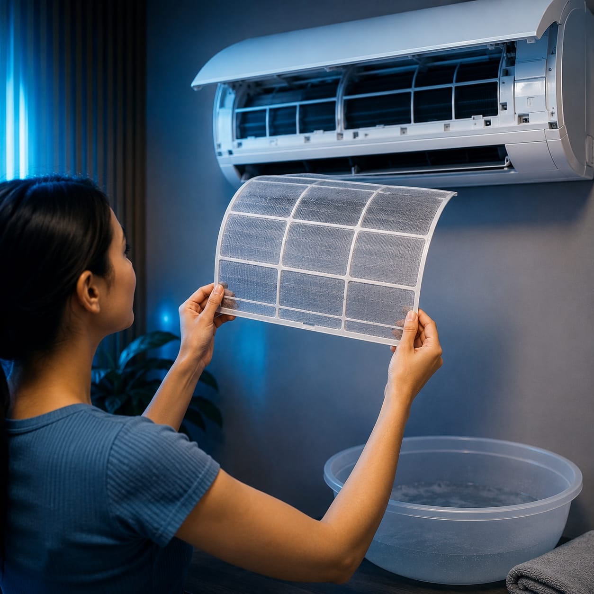
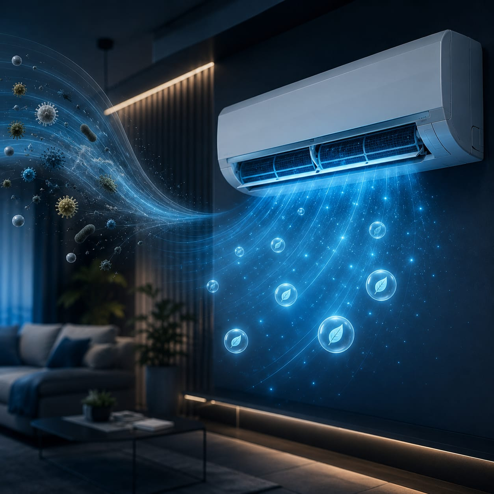
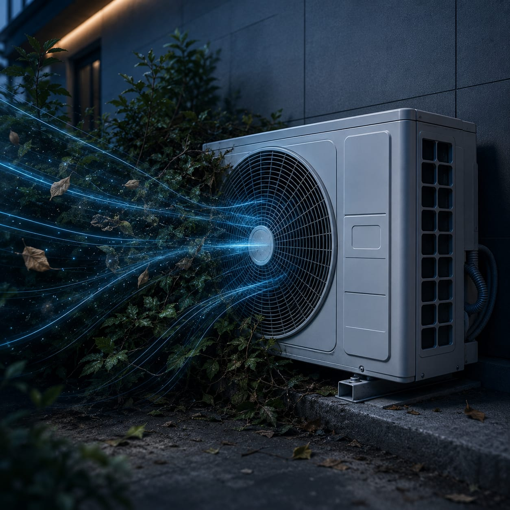
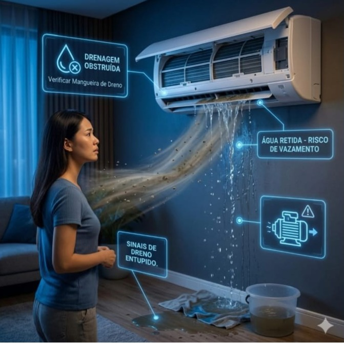

Limpeza de filtro periódica
Limpe os filtros a cada 30 dias em uso intenso. Filtro sujo reduz vazao de ar e eleva o consumo.

Com cuidados simples, você reduz consumo de energia, melhora a qualidade do ar e evita paradas inesperadas. Veja orientacoes que aplicamos no dia a dia técnico.
Ver dicas
Limpe os filtros a cada 30 dias em uso intenso. Filtro sujo reduz vazao de ar e eleva o consumo.

Mau cheiro e irritacao respiratoria são sinais de higienização pendente. Não espere agravar.

Garanta ventilacao ao redor da unidade externa. Obstrução causa superaquecimento e perda de rendimento.

Revisoes periódicas aumentam a vida util do equipamento e reduzem o risco de corretivas caras.
Mantenha entre 23 e 24 °C para equilibrar conforto e economia. Cada grau abaixo do ideal pode elevar o consumo em até 8%.

Gotejamento interno ou agua acumulada indicam necessidade de revisão em dreno e bandeja.
Envie modelo e problema no WhatsApp para receber orientação e proposta rapida.
Falar com técnico